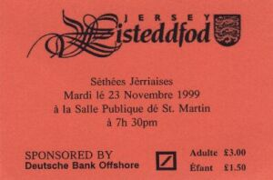

J'sis bein content d'aver l'opportunité d'vos dithe tchique patholes entouor l'Eistéddfod qu'eut lieu dans la Salle Publique dé St. Martin, lundi et mardi, le vingt trais et vingt quatre dé Novembre, iou qu'j'eus l'pliaîsi d'aidgi comme adjudicateu, auve le bouon souotchein de Ted Syvret comme adjoint.
Châque sethée, la salle 'tait plienne dé gens întérêssis à suivre et à supporter not' bouonne et ancienne langue; la qualité des présentâtions 'tait probablyement la miyeuthe que j'avons ieu l'pliaîsi d'êcouter pour bein d's'années.
Le lundi, la séthée c'menchi auve deux clâsses pour les jeunes en d'sous dé seize ans. La gangnante, la p'tite Veronica Fulton, tchi n'a qué sept ans, nos 'r'citi eune pièche de son chouaix auve tellement d'expression, qu'ou gangni la coupe au Sieur E. J. Luce auve nénante tch'eune mèrques.

J'eûmes des chansons et eune pièche de théâtre, non compétitive, toutes présentées par les êtudiants; tch'la donnît hardi d'pliaîsi à l'audience. Ieu plusieurs léctuthes tchi fûtent hardi apprêcyiés étout. Mais, sans autchune doute, la pièche de rêsistance vînt duthant les 'r'citâtions pour les adultes, iou qu'Audrey Lucas et Tony Scott Warren, tch'est au haut des rangs des êtudiants, prîntent part. I' 'taient deux supèrbes présentâtions tchi fûtent difficile a s'pather. Après bein de delibéthâtion, j'décidîmes de donner la coupe au Sieur C. W. Binet à Tony auve nénante trais mèrques, et nénante deux à Audrey.
Dans la clâsse pour léctuthe à livre ouvert, l'ordre fût renvèrsée quand Audrey ramâssi nénante tch'eune merques et Tony nénante. La séthée finit auve l'audience tout à fait heutheu et prêt à r'touonner à la deuxième séthée pour un autre festîn de bouon jèrriais.
Éh bein i'n fûtent pas d's'appointés. Mardi c'menchi auve des léctuthes prépâthées, et dgiez' êtudiants montrîtent comment qu'lus jèrriais a amendé années après années; Colin Ireson finit preûnmyi auve nénante tch'eune mèrques. Dans les dialogues de lus chouaix, Hilda Syvret et Gladys Davis gangnîtent auve nénante tch'eune.
Pour les dialogues impromptu, i'avait un chouaix de quatre sujets, mais les quatre pathés dé competiteurs décidîtent dé distchuter si des boulets et des des médicaments 'taient bouons pour perdre du paids; après hardi d'èrmerques amusantes, Joyce et Brian Gilbert gangnîtent auve nènante tch'eune.
Quand j'vîmes à la clâsse pour léctuthe prépâthée d'lus chouaix, la qualité dé toutes les présentâtions tait excellente, auve la pus basse mèrque à nénante (Cértificat d'Honneu). Ch'tait la miyeuthe clâsse qué j'avions oui d'pis longtemps. J'fûmes régalés auves du parfait jèrriais dé St. Ouen, balanchi par le pus bouon dé l'Est; tout 'tait la pour le connaîsseux. Ch'tait eune hardi difficile tâche à sélectionner un gangnant, et après avait bein considéther touos les points, j'décidîmes de 'n'pas s'pather Audrey Lucas et Jean l'Maistre, et j'lus donnîmes chatchun nénante trais mèrques.
La séthée finît auve eune pièche dé théâtre par la Paraisse dé St. Sauveux app'lée "Eune Election dans Mille Neuf Chent Septante Chinq". Les caractèthes tchi prîntent part, Eileen Le Sueur, Audrey et Michael Lucas, Dulcie Jones, Valerie Amy et Les Le Ruez, avaient bein d's'années d'éxpèrience entre ieux, et v'la tchi montrît. En gardant l'audience hardi amusée, i'nos fîtent eune présentâtion du pus haut calibre. J'lus donnîmes nénante trais mèrques et la Coupe des Enfûntchis.
Eune chose que j'trouvi èrmérchablye, tait d'vais qué touos les siens tch'avaient fait d's'entrées s'presentîtent sus la strade.
I'à tchiques années, l's'entrées avaient diminué, mais à cause des êfforts d's'êtudiants tchi c'menchîtent des clâsses du sé pour pouver prendre part dans l'Eistéddfod, la situation s'est ravigotée.
Mais i'n faut pas oublier lé grand support des siens tchi nos ont donné grand pliaîsi par nos divèrti et nos amuser auve lus talents dans l'couothant dé bein d's'années.
J'sis seux que j'pâle pour hardi d'gens quand j'offre m'n'appréciâtion et mes 'r'mèrciements au Docteu Frainque Le Maistre pour la grande contribution tchi'l a fait auve son mervèilleux dictionnaithe. J'ai tait adjudicateu siez fais, et ma tâche éthait tait hardi pus difficile si j'n'éthai pas peut faithe référence à son dictionnaithe.
Ch'est LA BIBLYE DU JÈRRIAIS.
Percy l'Masuthi, 26/11/1998
Viyiz étout: